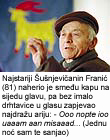

Ostalo ih je 470 u selu Šušnjevici i zaseocima Letaj, Nova Vas, Brdo i Jasenovik, osnivaju udrugu svih ljudi koji govore tim jedinstvenim jezikom starim možda i sedam stoljeća
Nu se știe cât al'e, betâr șåpte stotine de an, a zdrâjita limba pira åstez. Jel'es istrorumuni. Nu bacil'ejs, de prevodi în hârvatsko. Ili: "Ne zna se koliko ih je, stari su sedam stoljeća, a imaju samo jezik. Oni su Istrorumunji. Ne brinite se, slijedi prijevod na hrvatski." Taj egzotičan jezik ne dolazi iz nepoznate zemlje. Ime mu je istrorumunjski, a stoljećima ga govore mještani Šušnjevice iz Istre koji žive u općini Kršan. Šušnjevica je opustjela oaza tartufa, srdačnih i skromnih ljudi. U tom su kraju davno prebivali Rumunji a jedini im je trag upravo - jezik. Miran kraj nedaleko od Labina zainteresirao je javnost prošloga tjedna, kad je predsjednik mjesnog odbora Šušnjevice Josip Kontuš najavio kako će obnoviti Udrugu Istrorumunja, svih ljudi koji govore tim jezikom. Osnovana je 1995. godine, no nikad nije zaživjela.
U obiteljima se govori vlaški
 Jezik zvuči kao mješavina talijanskoga, rumunjskog i čakavskog. Naraštaji su na izvorni rumunjski dodavali izraze iz drugih, bliskih jezika. A sad Šušnjevičani u svojoj školi žele učitelja koji će djecu poučavati toj mješavini. Njihov se jezik stoljećima prenosio isključivo usmeno, s naraštaja na naraštaj.
Na uskim uličicama Šušnjevice tražimo (su)govornika. Nema znakova života. Kuća do kuće od suhozida, mnoge obrasle u korov, zatvorenih škura. Nitko ne izlazi ni iz onih kroz čije se dimnjake vije dim - vani je studeno. Samo 81-godišnji Franjo Belulović hoda uza skaline mjesne zajednice, pomažući si drvenim štapom. U pozdrav se samo nasmijao.
- Ja sam najstariji u selu! A Istrorumunji su stari sedam stoljeća! Sedam karavani prišlo tu kadi je bila kuga, dvi karavani prišle na Ćićariju, a pet ih je ostalo tu. Tako su me učili moji stari - priča nam Franić, kako ga zovu Šušnjevičani.
Na pitanje koliko često govori istrorumunjski, Franić (izgovara se s najmekšim mogućim ć) ispali:
- A kad ga ne govorim? Do svoje pete godine nisam znao drugog jezika, tako je govorio i moj nono.
Franić je gotovo cijeli život proveo u Šušnjevici. Kao šestogodišnjak ostao je bez majke i oca i bavio se obiteljskim obrtom - kovačijom. Vojnu školu pohađao je u Sloveniji, a kao partizan borio se u NOB-u. Ženio se nije i živi sam.
- U školi sam govorio slovenski, na vjeronauku talijanski, a u ratu hrvatski. Ali najviše govorim po vlaški, tako ovdje kažu za istrorumunjski i tako tu po familijama svi pričamo.
Franić djevojkama pjevao Lili Marleen
Franića je njegov nono naučio i razne priče. Kaže kako bi ih posjeo pokraj ognjišta i dugo u noć, dok je pucketala vatra, pričao anegdote. Franiću je najmilija ona o postolaru i vragu. No, od priča ovaj 81-godišnjak više voli pjesme. Bez imalo drhtavice u glasu, naherivši smeđu kapu na sijedu glavu, zapjevao nam je jednu od svojih najmilijih:
- Ooo nopte iooo uaaaam aan misaaad...
Hit "O nopte io uam an misad" u nas se prevodi kao "Jednu noć sam te sanjao". Inspirirao ga je davno šlager pjevačice Ljiljane Petrović pa je na njezinu melodiju ubacio svoj tekst. A onu poznatu "Na bregu kuća mala" prepjevao je kao "Su codru ai cåsa mica". A kad je bio mladić, djevojkama je pjevao "Lili Marleen". Naravno, na istrorumunjskom.
- Preveo sam cijeli tekst, samo u refrenu gdje se spominje Lili Marleen ja pjevam "kutire vojo fiiii". Naravno, to u partizanima nisam pjevao - smije se.
Sjajni pjevač Franić zaprepastio nas je i pamćenjem. Naizust "recitira" datume i događaje, poput "15. veljače 1934. godine mi je umrla mati, 26. srpnja 1958. godine je umro seoski župnik Branko Fabio, a 17. studenoga 1944. godine formirali smo artiljerijski divizion u Mrkoplju".
Smije se sam sebi:
- U školi u Mariboru rekli su mi da puno mislim i da sam baš bistar!
Odnijeli jezik u Ameriku
Poput Franića, mnogi se Istrorumunji ponose svojim jezikom, a govore ga ravnopravno uz hrvatski. Domaći ih još nazivaju Vlasima i Ćiribircima. A Josip Kontuš, osnivač udruge, u svom nam je domu pričao:
- Povijest nije točno ustanovila kad su i zašto Rumunji stigli u Istru. Sve je ostalo na legendama. Verzija je mnogo. A u nekim istarskim zbornicima piše da su stigli u 15. stoljeću jer su bježali pred Turcima. Bili su stočari i ratari i stopili su se s domaćim stanovništvom. No, danas o njima svjedoči samo jezik, nisu ostavili nikakav drugi dokaz ili trag - objašnjava Kontuš.
Gospodin Josip ima privatno poduzeće, dane provodi u ugovaranju poslova, no već ga desetljećima proganja ideja o očuvanju istrorumunjskog jezika. Ne govori ga, ali ga razumije. A susjedi ga pozdravljaju s "bura zi" - dobar dan.
No, Istrorumunji su poznatiji u svijetu nego u Hrvatskoj!
- Iz Šušnjevice se mnogo ljudi iselilo pedesetih godina. Bilo je više od tisuću duša, a sad ih je ostalo 470 u selu i u zaseocima Letaj, Nova Vas, Brdo i Jasenovik. Najviše ih je otišlo u Ameriku, tražili su bolji život. I sa sobom su odnijeli istrorumunjski jezik. Da ga dobro govore, čujemo kada dođu kući na godišnji odmor. Pretpostavljamo da danas taj jezik govori nekoliko stotina ljudi.
Prije nekoliko godina, kad se puno raspravljalo o rumunjskim precima, javio se Kontušu povjesničar Josip Miličević, tvrdeći da je ispravan naziv Rumeri, a ne Istrorumunji. No, na te navode Kontuš odmahuje glavom, tvrdeći kako bi bilo dobro da se neki etnolog ili povjesničar prihvati otkrivanja njihova podrijetla.
- Jezik je živ svjedok da su Rumunji živjeli u Istri i to je naš najčvršći argument - kaže.
Pet crkava za 470 ljudi
Spomenika u mjestu nema, tek je u središtu uzdignut kameni partizan koji simbolizira sve pale borce. A 470 Šušnjevičana ima čak pet crkava. Uza svaku je groblje. Srednjovjekovna arhitektura nekih crkvica vapi za obnovom. No, objašnjava Kontuš, obnovu plaćaju mještani. Restauratori su već vratili stari sjaj osamljenoj crkvici Svetog Duha, župnoj Ivana Krstitelja te crkvi Svetog Silvestra.
Iz središta Šušnjevice pogled se stere na plodno Čepićko polje - oazu tartufa. Bijela crkva Svetog Ivana Krstitelja, obnovljena prije dvije godine, odskače od plodne zemlje crnice i sivih kamenih kuća. Do nje je ružičasto obojena zgrada mjesne zajednice u kojoj je smješten poštanski ured i trgovina. Na ružičastu zgradu naslonjena je jedna manja, zapuštena. Naljepnica s imenom "Tina" svjedoči da je nekad u selu bio i kafić.
Najmlađi mještani smiju se došljacima. Malo im gostiju pristigne zimi. Djevojčica i tri dječaka ganjaju nogometnu loptu na putu prema školskom igralištu. Stidljivo, s titrajućim osmijehom kažu da se zovu Sanja, Korado, Andrej i Marko. Kažemo da smo došli zbog njihova jezika, no brzo odgovaraju:
- Nije to naš jezik, mi ga ne znamo. Tako govore stari. Ne razumijemo baš puno - viču uglas.
Hrvatska ima i rječnik istrorumunjskog jezika, koji je prije nekoliko godina objavio jezikoslovac August Kovačec. A mališani će vjerojatno imati priliku naučiti govor svojih "starih". Josip Kontuš obećaje kako će Udruga Istrorumunja sve učiniti da u selo već na proljeće stigne - učitelj.
Piše Valentina Grivić
Snimio Željko Hladika
January 13, 2002
© 2002 Večernji List